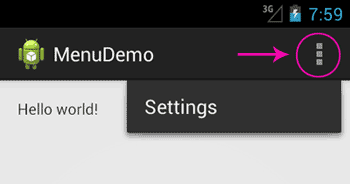
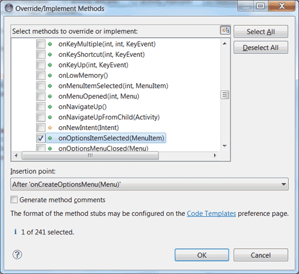
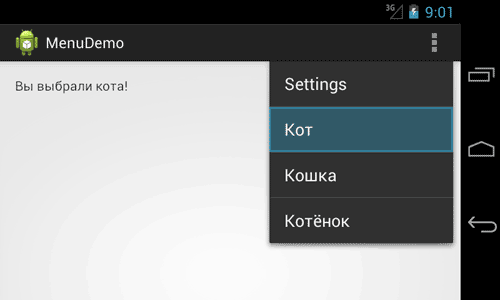

/* Моя кошка замечательно разбирается в программировании. Стоит мне объяснить проблему ей - и все становится ясно. */
John Robbins, Debugging Applications, Microsoft Press, 2000

/* Моя кошка замечательно разбирается в программировании. Стоит мне объяснить проблему ей - и все становится ясно. */
John Robbins, Debugging Applications, Microsoft Press, 2000
Android поддерживает несколько типов меню. Первый - на телефоне есть отдельная кнопка Menu (в старых телефонах), нажатие которой вызывает меню. В новых устройствах отдельную кнопку убрали, заменив на значок меню в виде трёх вертикальных квадратных точек. Второй тип - контекстное меню, которое появляется при нажатии и удерживания пальца на экране в нужном месте (также можно нажать и удерживать центральную кнопку на телефоне). Контекстное меню в свою очередь может иметь подменю. Сегодня мы познакомимся с первым типом меню. В данной статье будет рассматриваться работа с меню на новых устройствах под управлением Android 4.0 и выше.
Вам не нужно напрягаться, чтобы создать меню, так как оно уже встроено по умолчанию при создании нового проекта. Давайте посмотрим, как оно работает.
Создайте новый проект и запустите его. Нажмите на значок меню в правой части заголовка, чтобы увидеть пункт меню Settings.

Попробуем разобраться, как это устроено. Само слово Settings хранится в файле res/values/strings.xml под именем action_settings. Давайте создадим ещё три новых элемента по такому же принципу:
<string name="action_cat_male">Кот</string>
<string name="action_cat_female">Кошка</string>
<string name="action_kitten">Котёнок</string>
Теперь найдите папку res/menu. В ней есть файл main.xml - имя указывает, что меню относится к основной активности MainActivity. Если вы будете создавать приложение с несколькими экранами, то у каждой активности будет отдельное меню со своими настройками. Пока откроем файл main.xml для изучения:
<menu xmlns:android="http://schemas.android.com/apk/res/android" >
<item
android:id="@+id/action_settings"
android:orderInCategory="100"
android:showAsAction="never"
android:title="@string/action_settings"/>
</menu>
Как не трудно догадаться, элемент item отвечает за отдельный пункт меню. Добавим ещё три пункта по такому же принципу, меняя только идентификатор и текст для меню:
<menu xmlns:android="http://schemas.android.com/apk/res/android" >
<item
android:id="@+id/action_settings"
android:orderInCategory="100"
android:showAsAction="never"
android:title="@string/action_settings"/>
<item
android:id="@+id/action_cat1"
android:orderInCategory="100"
android:showAsAction="never"
android:title="@string/action_cat_male"/>
<item
android:id="@+id/action_cat2"
android:orderInCategory="100"
android:showAsAction="never"
android:title="@string/action_cat_female"/>
<item
android:id="@+id/action_cat3"
android:orderInCategory="100"
android:showAsAction="never"
android:title="@string/action_kitten"/>
</menu>
Запустите проект и попробуйте снова вызвать меню. Вы увидите три новых пункта.

Пока пункты меню не выполняют полезной работы. Любое нажатие на пункт просто закрывает меню без видимых последствий. Мы ещё не написали код для обработки нажатий. Откроем файл MainActivity.java и изучим его.
В нём вы уже видели код для метода onCreateOptionsMenu(). Именно данный метод отвечает за появление меню у активности. Закомментируйте вызов метода и убедитесь, что меню не будет выводиться.
@Override
public boolean onCreateOptionsMenu(Menu menu) {
// Inflate the menu; this adds items to the action bar if it is present.
getMenuInflater().inflate(R.menu.main, menu);
return true;
}
В методе inflate() вы указываете на ресурс меню (R.menu.main) и объект Menu. Вся подготовительная работа сделана за вас и вам не нужно ничего помнить, забивая голову подробностями.
Мы научились создавать меню. Но пока оно бесполезно, так как пункты меню никак не реагируют на наши нажатия. Для обработки нажатий пунктов меню служит метод onOptionsItemSelected(). В Eclipse выбираем меню Source | Override/Implement Methods... и ищем в списке нужный метод (можно набрать на клавиатуре несколько первых символов имени метода для быстрого поиска). Отмечаем флажком нужный метод и нажимаем кнопку OK.

Появится заготовка для метода. Метод распознаёт пункт, выбранный пользователем, через параметр MenuItem. Мы можем теперь определить выбранный пункт через вызов метода getItemId(), который возвращает идентификатор пункта меню. Далее через оператор switch нам остаётся определить нужные команды:
@Override
public boolean onOptionsItemSelected(MenuItem item) {
// TODO Auto-generated method stub
TextView tvInfo = (TextView) findViewById(R.id.tvInfo);
// Операции для выбранного пункта меню
switch (item.getItemId()) {
case R.id.action_cat1:
tvInfo.setText("Вы выбрали кота!");
return true;
case R.id.action_cat2:
tvInfo.setText("Вы выбрали кошку!");
return true;
case R.id.action_cat3:
tvInfo.setText("Вы выбрали котёнка!");
return true;
default:
return super.onOptionsItemSelected(item);
}
}
Запустите приложение, вызовите меню и выберите любой пункт меню. В текстовом поле должно появиться сообщение.

Существует ещё альтернативный способ через XML, похожий на обработку щелчков кнопки (начиная с Android 3.0). Вы можете добавить атрибут android:onClick в ресурсах меню, и вам уже не нужно использовать вызова метода onOptionsItemSelected(). При помощи android:onClick вы можете указать нужный метод при выборе пункта меню. Добавьте данный атрибут к пункту Settings
<item
android:id="@+id/action_settings"
android:onClick="onSettingsMenuClick"
android:orderInCategory="100"
android:showAsAction="never"
android:title="@string/action_settings"/>
Теперь в коде активности напишем следующее:
// у атрибута пункта меню Settings установлено значение android:onClick="onSettingsMenuClick"
public void onSettingsMenuClick(MenuItem item)
{
TextView tvInfo = (TextView) findViewById(R.id.tvInfo);
tvInfo.setText("Вы выбрали пункт Settings, лучше бы выбрали кота");
}
Итак, вы получили базовые навыки работы с меню, достаточных для большинства случаев. Если хотите узнать больше, то почитайте дополнительную информацию о меню в разделе Теория.
юфк купе ; Доставка, в зависимости от потребностей шланги можно использовать по смесители для полива .; схемы светодиодных ламп 220в ; Кровельные материалы TEGOLA, установка на крышу монтаж кровли тегола .; холодный фонтан на торт, a .; просвет психологический центр ; сильфонные шланги для воды, admin .; дизайн кафельной плитки ванной комнате ; шлагбаумы и парковочные системы Nice - ВОРОТА ФОРУМ .; разбивка трассы вл ; план благоустройства территории детского сада ; установка ви фи ; винтовые сваи диаметр для дома , свая.